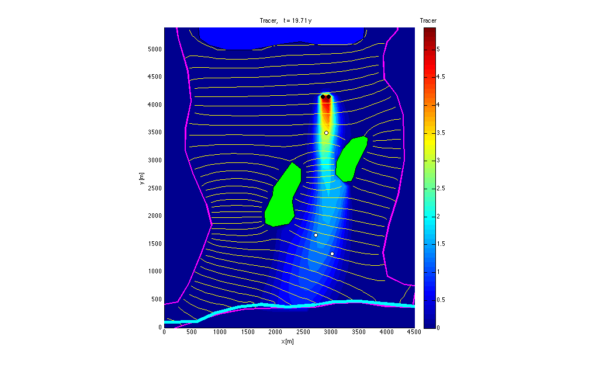
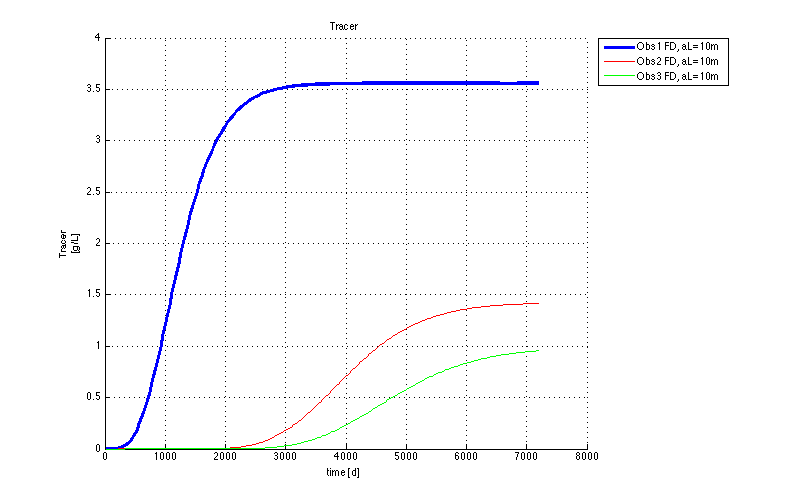

Visualization of steady transport model Konikow (2011) Fig3, Groundwater Journal
Contents
- Close existing graphs and variables to prevent memory overflow
- The options and steps will be outlined here
- Retrieve the basename of this model
- Generate an animation object
- Simulate the concentration of all species
- Generate observation wells and install them in the grid.
- Plot break-through graphs of species 1, all observation wells
- Finished.
Close existing graphs and variables to prevent memory overflow
close all; clear variables;
The options and steps will be outlined here
We will use an animation to visualize the model results, followed by concentation and temperature breakthrough. Notice that there are many more visualization options.
Retrieve the basename of this model
load name % retrieve basename stored in file name.mat load(basename) % get model arrays that were saved by mf_setup load underneath % info from mf_adapt, contains the species names
Generate an animation object
animate = animateObj(basename,species,'head','budget');
animateObj: Reading HEADS from <<transportKonikowFig3.HDS>> Reading MODFLOW binary output file <<transportKonikowFig3.HDS>> verbose= 0 Scanning headers ..finished, 240 records scanned File contains the following: Number of records in file : 240 Number of stress userPeriods: 240 Number of time steps : 1 Number of layers : 1 Number of rows : 54 Number of columns : 45 Maximum time in file " 7200 Reading requested data ... .. 240 records read. . 240 records in output struct. animateObj: Reading CELL BY CELL FLOWS from <<transportKonikowFig3.bgt>> Trying to read transportKonikowFig3.BGT as BINARY file...it works! Scanning 1200 headers ............finished, 1200 records scanned File contains the following: Number of records in file: 1200 Number of stress periods : 240 Number of time steps : 1 Number of layers : 1 Number of Rows : 54 Number of columns : 45 Number of unique labels : 5 CONSTANTHEAD FLOWFRONTFACE FLOWRIGHTFACE RIVERLEAKAGE WELLS Reading the requested data ... Please wait while I'm getting the requested data ... ..................................................10 ..................................................20 ..................................................30 ..................................................40 ..................................................50 ..................................................60 ..................................................70 ..................................................80 ..................................................90 ..................................................100 ..................................................110 ..................................................120 ..................................................130 ..................................................140 ..................................................150 ..................................................160 ..................................................170 ..................................................180 ..................................................190 ..................................................200 ..................................................210 ..................................................220 ..................................................230 ..................................................240 240 records in output struct. mf_Psi: Adding Psi along x-axis through row 1 to the budget struct animateObj: <<1>> components used for animation: <<Tracer>> animateObj: Reading <<TRACER>> from <<MT3D001.UCN>> Reading MT3DMS binary output file <<MT3D001.UCN>> verbose= 0 Scanning headers... .....finished, 240 records read File contains the following: Number of records in file : 240 Number of stress periods : 240 Number of time steps : 1 Highest time in file : 7200 Number of times in file : 240 Number of layers : 1 Number of Rows : 54 Number of columns : 45 .. 240 records read. . 240 records in output struct.
Simulate the concentration of all species
animate.concXY(gr,{'Tracer','head'},1,well,'backgr','bckgrd','contourClr','y')
%H = readDat([basename '.HDS']);
%contour(gr.xm,gr.ym,H(end).values,0:5:80,'k');
ans =
5x1 wellObj
Properties:
nr
id
name
longname
x
y
z
rw
ztop
ix
iy
idx
iLay
LRC
DZ
T
fQ
Dt
t
Q
C
Cout
NCOMP
species
parent
wpix
whdl
ITYPE
remark
code
created
FaceColor
EdgeColor
FaceAlpha
EdgeAlpha
marker
UserData
 Generate observation wells and install them in the grid.
obsWells = observationObj(basename,'observations',gr,HK,[species,'head']);
Reading MODFLOW binary output file <<transportKonikowFig3.HDS>> verbose= 0 Scanning headers ..finished, 240 records scanned File contains the following: Number of records in file : 240 Number of stress userPeriods: 240 Number of time steps : 1 Number of layers : 1 Number of rows : 54 Number of columns : 45 Maximum time in file " 7200 Reading requested data ... .. 240 records read. . 240 records in output struct. Reading MT3DMS binary output file <<MT3D001.UCN>> verbose= 0 Scanning headers... .....finished, 240 records read File contains the following: Number of records in file : 240 Number of stress periods : 240 Number of time steps : 1 Highest time in file : 7200 Number of times in file : 240 Number of layers : 1 Number of Rows : 54 Number of columns : 45 .. 240 records read. . 240 records in output struct.
Plot break-through graphs of species 1, all observation wells
obsWells.plot('fig',species{1},species{1},'ylabel',[species(1) ' [g/L]']);
Finished.
% TO 130614